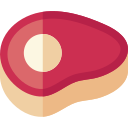
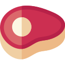

Ophthalmosaurus
Thằn Lằn Mắt kỷ Jura
Tổng quan
Kỷ
Jurassic
Họ
Ichthyosauridae
Chi
Ophthalmosaurus
Dài
5.4 m
Nặng
680 kg
Thức ăn

 

Ophthalmosaurus là một chi Ichthyosauria sống vào thời kỳ Jura muộn, nổi bật với đôi mắt rất lớn. Cơ thể có dáng giống cá heo, với một bộ hàm gần như không có răng hoặc răng rất nhỏ thích ứng cho việc bắt mực.
Nguồn: wikipedia.org
Phân bố
Khu vực biển Châu Âu và Bắc Mỹ

Thông tin thêm về Ophthalmosaurus
Kỷ nguyên
Ophthalmosaurus sống vào thời kỳ Bathonian đến Tithonia của kỷ Jura muộn khoảng 165 đến 160 triệu năm trước.
Phân bố
Ophthalmosaurus có sự phân bố địa lý rất rộng và được tìm thấy ở Anh trong Hệ tầng đất sét Oxford. Pháp, Greenland, Mexico trong Hệ tầng La Caja. Hoa Kỳ, Wyoming trong Hệ tầng Sundance. Từ đó có thể thấy chúng đã bơi xuyên suốt từ Thái Bình Dương sang Đại Tây Dương.
Tên khoa học
Ophthalmosaurus nghĩa là "Thằn lằn mắt" trong tiếng Hy Lạp, được đặt tên dựa vào đôi mắt cực lớn của chúng.
Kích thước
Ophthalmosaurus có chiều dài khoảng từ 5 đến 6 m (19,5 ft) và nặng khoảng 680 đến 900 kg (1500 - 2000 pounds).
Ngoại hình
Nguồn cảm hứng của cái tên Ophthalmosaurus là đôi mắt to, chúng có thể có đôi mắt lớn nhất tương xứng trong số các sinh vật biển được biết đến ở vùng biển cuối kỷ Jura. Không phải ngẫu nhiên mà Ophthalmosaurus có thân hình cá heo duyên dáng và bộ hàm gần như không có răng. Khi những động vật không liên quan sống theo lối sống tương tự, chúng có xu hướng chia sẻ hình dạng giống nhau. Các nhà khoa học gọi hiện tượng này là "Sự tiến hóa hội tụ". Giống như cá heo, cơ thể thuôn dài của chúng cho phép chúng trượt dễ dàng trong nước.
Cá heo và Ophthalmosaurus cũng chia sẻ các tính năng khác. Cả hai đều phát triển từ tổ tiên thở không khí và cần phải nổi lên mặt nước để thở. Một số bộ xương của Ophthalmosaurus thậm chí còn có dấu hiệu bị bệnh giảm áp, giống như cá voi hiện đại. Nếu chúng nổi lên quá nhanh, khí hòa tan trong máu của họ sẽ giải nén và tạo thành bong bóng khí. Tuy nhiên, không giống như cá voi, Ophthalmosaurus di chuyển đuôi của chúng từ bên này sang bên kia giống như cá.
Chế độ ăn và săn mồi
Ophthalmosaurus có thể thích ăn mực ống hơn. Mõm của nó có rất ít răng. Đôi mắt rộng tới 9 inch cho phép nó nhìn thấy rõ con mồi trong vùng nước tối hoặc vào ban đêm. Nó có thể đã có thể ở dưới nước trong 20 phút. Thậm chí với tốc độ 2 dặm / giờ, một con Ophthalmosaurus có thể lặn sâu tới 1900 feet và quay trở lại bề mặt một cách an toàn trong khung thời gian đó. Ước tính tốc độ cho phạm vi động vật này từ 4 đến 10 dặm một giờ. So sánh thiết kế xương sống giữa hai loài Ophthalmosaurus cho thấy O.icenicus có thể đạt tốc độ cao hơn, nhưng O.natans có lẽ nhanh nhẹn hơn.
Khám phá
Số lượng lớn các hóa thạch liên quan đến Ophthalmosaurus không chỉ chỉ ra rằng nó là một loài Ichthyosaur phổ biến ở cuối kỷ Jura, mà chúng còn tạo cơ sở cho rất nhiều nghiên cứu về Ichthyosaur nói chung.
Điều đó liên quan đến việc sinh sống ở loài bò sát biển, một điều đã được chứng minh ở các chi Ichthyosaur khác như Platypterygius, nhưng ở Ophthalmosaurus được chứng minh bằng việc phát hiện tổng cộng hơn 50 con cái đang mang thai khác nhau. Loài "Thằn lằn mắt" này có lẽ đã sinh ra nhiều con non vào thời điểm đó với số lượng con non bên trong cơ thể mẹ là từ 2 đến 11 con. Vì vậy, rất có khả năng các chi Ichthyosaur khác cũng đã sinh ra những lứa gồm nhiều con riêng lẻ.